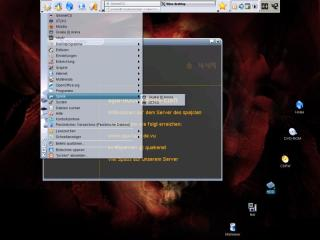
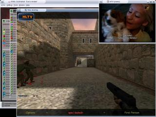

| Eine GNU/Linux Distribution basierend auf Gentoo Linux A GNU/Linux distribution based on Gentoo Linux |
irc://irc.quakenet.org/jollixHOME |


Kontakt:
Oliver Schwinn
patteh[AT]berlios[DOT]de
or leave a message
Jochen Spang
knochen[AT]berlios[DOT]de
or leave a message
 Site in english
Site in englishjollix 0.1 Screenshots


 